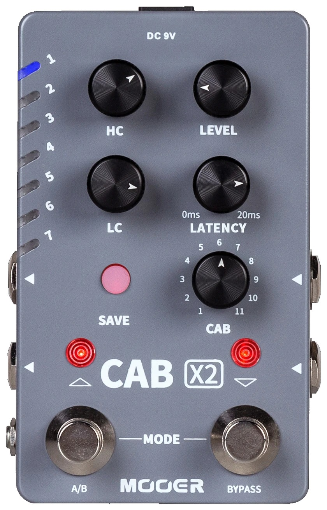
CAB X2
Stereo Cab Simulation Pedal
Owner's Manual
Precautions
Please read carefully before proceeding.
Power Supply
Please connect the designated AC adapter to an AC outlet of the correct voltage. Be sure to only use an AC adapter which supplies 9V DC, 300mA. Unplug the AC power adapter when not in use or during electrical storms.
Location
To avoid deformation, discoloration, or other serious damage, do not expose this unit to the following conditions:
- Direct sunlight or other heat sources
- Magnetic fields
- Excessively dusty or dirty locations
- Strong vibrations or shocks
- High humidity or moisture
Radio Frequency Interference
Radios and televisions placed nearby may experience reception interference. Operate this unit at a suitable distance from radios and televisions.
Cleaning
Clean only with a soft, dry cloth. If necessary, slightly moisten the cloth. Do not use abrasive cleanser, cleaning alcohol, paint thinners, wax, solvents, cleaning fluids, or chemical-impregnated wiping cloths.
Features
- High-quality IR loading stereo cabinet simulation pedal
- Includes 14 user preset slots that can store two different cabinet simulation settings each
- 11 factory cabinet simulation files with support for loading third-party impulse response files
- Choose between mono or stereo setups
- Footswitch can be assigned as a traditional on/off switch or to switch between presets
- Dual inputs (stereo) and outputs (stereo) for stereo/mono setup
- Comes with a specialized editor software for preset management and IR loading
Top Panel
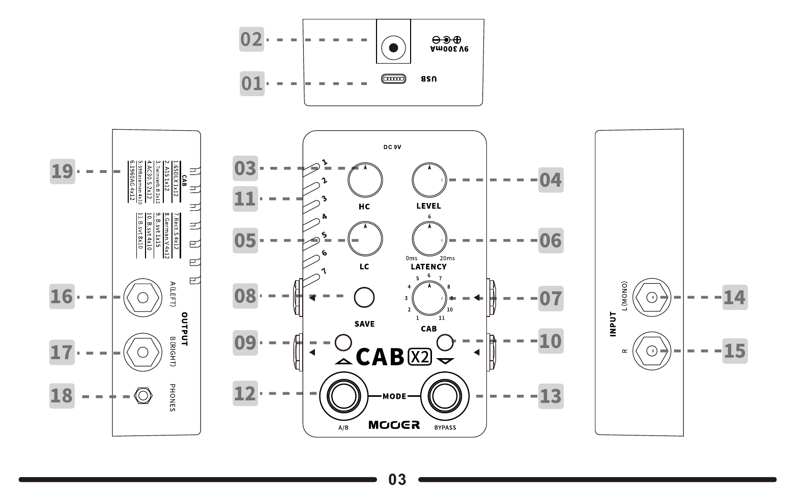
01. TYPE-C USB port: Connect to computer editor software to manage preset, loading IR and firmware update.
02. DC 9V: Connect to center negative power supply with 9V and at least 300mA current draw. Recommend to use the original power supply to avoid unexpected noise.
03. HIGH CUT: High frequency cut adjustment (Range from 3kHz to 20kHz)
04. LEVEL: Volume level adjustment
05. LOW CUT: Low frequency cut adjustment (Range from 25Hz to 500Hz)
06. LATENCY: Latency value adjustment from 0 to 20ms.
07. CAB: Select cabinet simulation from 11 factory setting files.
08. SAVE: Press to switch between 1-14 preset slots, press and hold to confirm saving preset.
09. Left footswitch LED: Indicate the current cab sim is type A or type B. Blue for A, RED for B.
10. Right footswitch LED: Indicate the on/off status of the pedal. BLUE LED for on, LED off for off.
11. Preset LED: Indicates currently selected preset slot.
12. Left (A/B) footswitch: Press to switch A/B cab sim
13. Right (BYPASS) footswitch: Press to switch on/off the currently selected cab sim
14. INPUT-L (MONO): 1/4" unbalanced (TS) monoaural output jack. Please utilize this jack for mono input setup (It is the left input of the stereo setup)
15. INPUT R: 1/4" unbalanced (TS) monoaural output jack (It is the right input of the stereo setup)
16. OUTPUT A (Left): 1/4" unbalanced (TS) monoaural output jack, left cab sim analog output jack
17. OUTPUT B (Right): 1/4" unbalanced (TS) monoaural output jack, right cab sim analog output jack
18. PHONES: 1/8" stereo audio headphone output jack
19. Factory cab list: Factory cabinet simulations list
* The regular frequency range of high and low cut
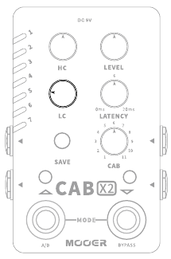
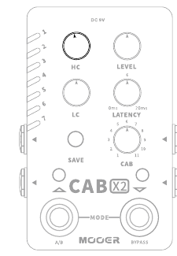
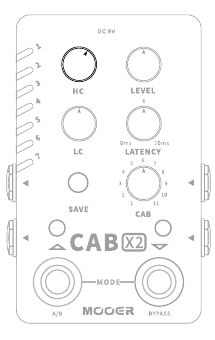
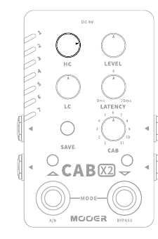
Instructions
Select Preset
Press SAVE button to scroll through the 14 preset slots; Or you can press two footswitches simultaneously to enter preset select mode, the LED of both footswitches, the LED of SAVE button will blink in RED. In this mode, press left/right footswitch to scroll up/down the 14 presets.
The preset select mode will exit and be back to normal mode if idle for more than 3 seconds. In normal mode, the LED of both footswitches and SAVE button will stay on.
Tone Adjustment for Left/Right Output
Each preset can store the cab sim models, parameters of the left output and right output individually. Press the left footswitch to switch the A (left) output and B (right) output. The color of the LED button indicates the currently selected output. Blue means the left output is selected while red means the right output is selected. The controllable parameters include LEVEL, TYPE, LATENCY, LOW CUT, HIGH CUT and CAB.
In the normal footswitch mode, press right footswitch to turn on/off the cab sim of left/right output.
The PRESET LED will blink when preset parameter changes and have not been saved.
Save Presets
Press and hold the SAVE button for 2 seconds to save the currently edited parameters. The button LED will blink to confirm saving is complete.
Factory Reset
Unplug the power cord then press and hold the SAVE button while plugging in the power cord to power on the unit. The PRESET LED will start to blink. Release the button and wait for the LED to start blinking to confirm the reset was successful. This operation can be cancelled by powering off the pedal before releasing the SAVE button.
Notice: Factory reset will clear all user files, including the third-party impulse response files.
Recommended Setup
Pedalboard Mono Setup
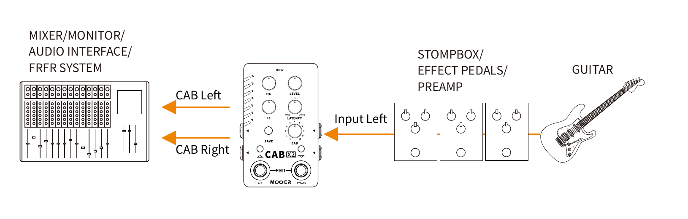
Pedalboard Stereo Setup
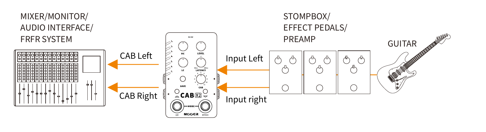
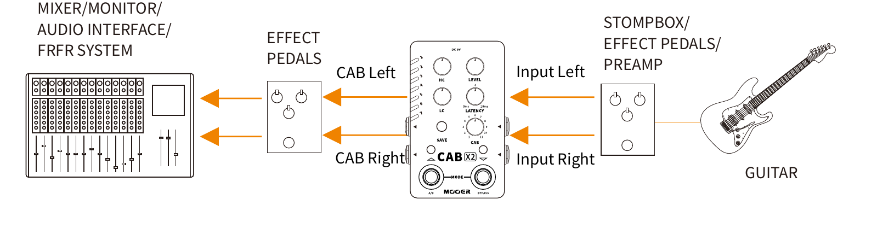
Multi-Effect Setup
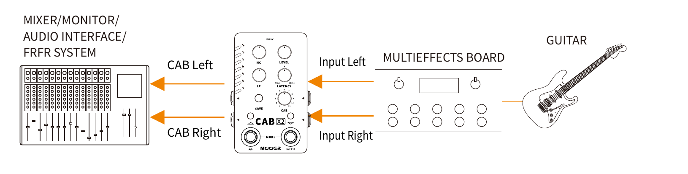
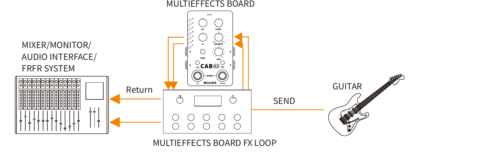
FX Loop with Amplifier
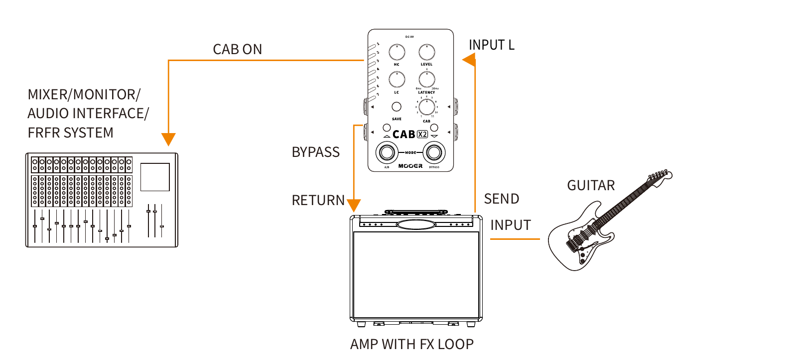
Notice: In this setup, we recommend setting the output connecting to the amplifier to bypass the cab sim. The other output connecting to the mixer/FRFR system should have the cab sim on.
CAB X2 Editor Software
CAB X2 supports computer editor software. Users can quickly adjust parameters, manage presets, load impulse response files, backup user files, etc.
Download
Visit the official MOOER AUDIO website (www.mooeraudio.com/download.html) and download the software version that matches the operating system (OS) of your computer. OS requirements: Win7 or higher, Mac OS 10.11 or higher.
Connection
After finishing the installation, connect your CAB X2 to your computer using the USB cable that comes with the unit. Open the CAB X2 EDIT software and select the icon on the top right corner to confirm connection.
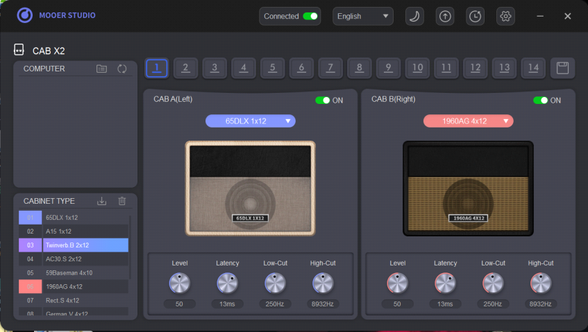
In the CABINET TYPE area in the left bottom, there are two different colors. Blue represents the left output signal while Red represents the right output signal.
Select Preset
Click on the numbers to switch to the relevant preset patch.
Select Cabinet Simulation
Click on the drop-down menu under the cab picture to view and select cab sim.
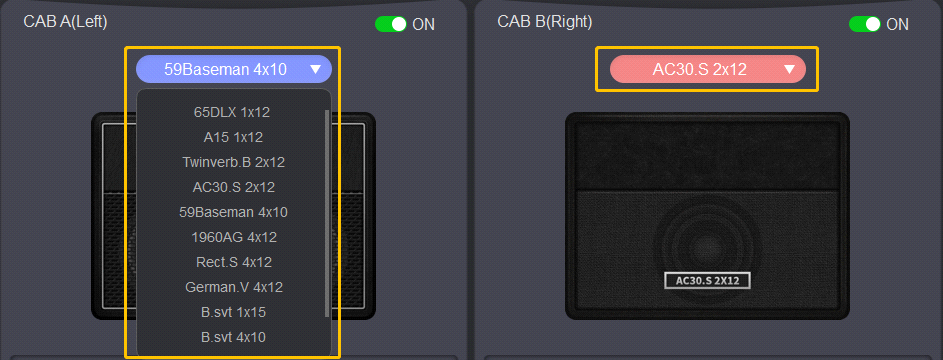
Select desired cabinet simulation on the right side. Right click a desired cab sim model, decide if it is set to left output or right output in the popup window.
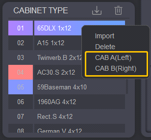
Preset Saving
Click on the icon to save the currently selected preset.
Preset Management
Export Preset: Drag the number on the right-top PRESET (Device) area to the COMPUTER area to export the preset file from the CAB X2 to the computer.
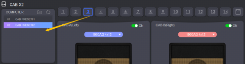
Import Preset: Drag the preset from the COMPUTER area to the desired number on the PRESET (Device) area to import the preset file from the computer to the CAB X2.
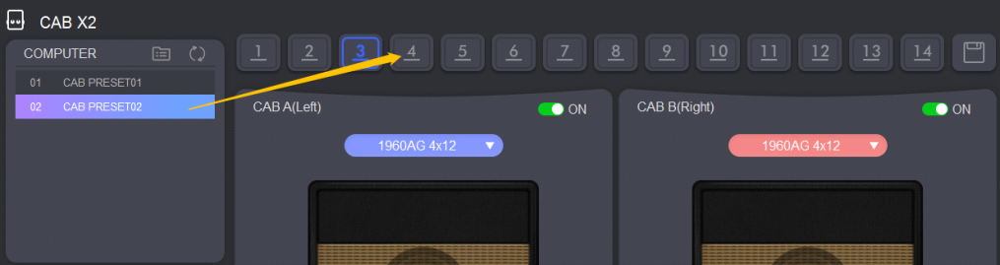
Click on the icon in the COMPUTER area to open the target folder of preset files in your computer.
Notice: 1. Put the preset files into this
folder and click the icon. Those preset files will be shown
in the COMPUTER area of the software.
2. Preset files do not include third-party impulse response
files.
Firmware/Software Update
Click on the icon to update the firmware or editor software. After firmware update is done, the CAB X2 will reboot automatically. For editor software update, it will switch to the download center of MOOER AUDIO official website, you can download the software on the software download page and install it.
Factory Reset
Click on the icon to enter factory reset menu. A confirmation window will pop up, click on Yes to confirm reset. The CAB X2 will reboot automatically after reset is done.
Notice: Factory reset will clear up all the preset patches and third-party IR files.
Backup/Restore
Select the icon, click on the button to backup all preset files in your CAB X2. Select the target location to start backing up files. The preset files will be packaged into a single .bfl file.
Notice: This backup file ".bfl" includes impulse response files.
Effect List
| Name | Description |
|---|---|
| 65DLX 1×12 | Based on Fender® 65 Deluxe reverb 112 cabinet |
| A15 1×12 | Based on VOX® AC15C1 112 cabinet |
| Twinverb.B 2×12 | Based on Fender® 67 Twin Reverb Blackface 212 cabinet |
| AC30.S 2×12 | Based on VOX® AC30 212 cabinet |
| 59Baseman 4×10 | Based on Fender® 59 Bassman 410 cabinet |
| 1960AG 4×12 | Based on Marshall® 1960A Green Back 412 cabinet |
| Rect.S 4×12 | Based on Mesa Boogie® Recto Standard 412 cabinet |
| German.V 4×12 | Based on Diezel® Rear loaded V30 412 cabinet |
| B.svt 1×15 | Based on Ampeg® svt 15E 115 cabinet |
| B.svt 4×10 | Based on Ampeg® svt 410HE 410 cabinet |
| B.svt 8×10 | Based on Ampeg® svt 810E 810 cabinet |
*Notes: All product names belong to their owners and are only used in this product and manual as a reference to tone types.
Specification
- Input
- 2 × 1/4" monoaural jack (Impedance value: 1M ohms)
- Output
- 2 × 1/4" monoaural jack (Impedance value: 510 ohms), 1 × 1/8" stereo audio output jack (Impedance <1 Ohms)
- Power Supply
- 9V DC center negative (Please ensure the voltage value of power supply is not more than 9V, ensure the polarity is correct.)
- Current Draw
- 300mA
- Dimension
- 75 x 115 x 33mm
- Weight
- 0.334 kg
- Accessories
- Owner's manual, USB TYPE-C to TYPE-A cable, DC 9V power supply, Quick guide, Sticker
- Format
- WAV
- Sample Rate
- 44.1kHz (support loading file with different sample rate)
- Sample Accuracy
- 24 bit
- Sample Length
- 2048 × 2